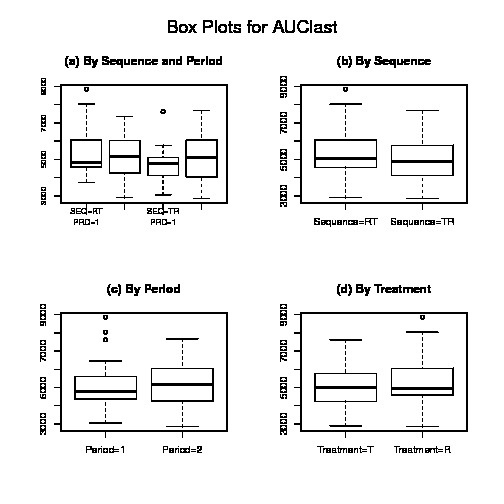
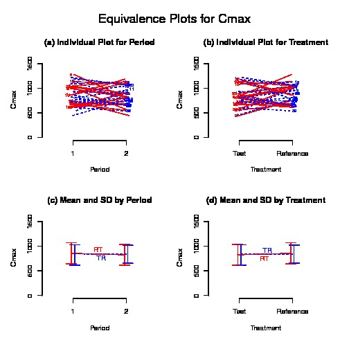
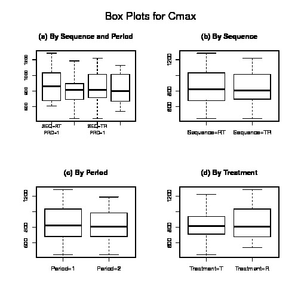
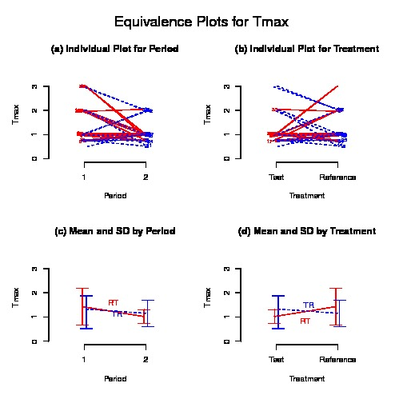
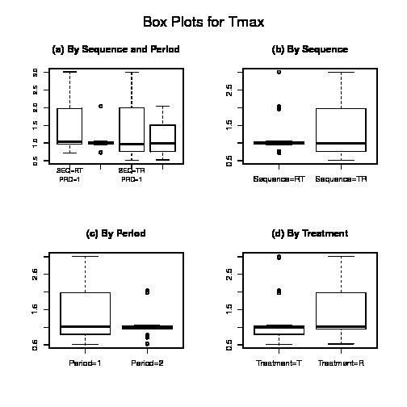

## $AUClast
## $AUClast$`Analysis of Variance (log scale)`
## SS DF MS F p
## SUBJECT 2.875497e+00 32 8.985928e-02 3.183942248 0.0008742828
## GROUP 1.024607e-01 1 1.024607e-01 1.145416548 0.2927731856
## SUBJECT(GROUP) 2.773036e+00 31 8.945279e-02 3.169539016 0.0009544080
## PERIOD 3.027399e-05 1 3.027399e-05 0.001072684 0.9740824428
## DRUG 3.643467e-02 1 3.643467e-02 1.290972690 0.2645764201
## ERROR 8.749021e-01 31 2.822265e-02 NA NA
## TOTAL 3.786834e+00 65 NA NA NA
##
## $AUClast$`Between and Within Subject Variability`
## Between Subject Within Subject
## Variance Estimate 0.03061507 0.02822265
## Coefficient of Variation, CV(%) 17.63193968 16.91883011
##
## $AUClast$`Least Square Means (geometric mean)`
## Reference Drug Test Drug
## Geometric Means 5092.098 4858.245
##
## $AUClast$`90% Confidence Interval of Geometric Mean Ratio (T/R)`
## Lower Limit Point Estimate Upper Limit
## 90% CI for Ratio 0.889436 0.9540753 1.023412
##
## $AUClast$`Sample Size`
## True Ratio=1 True Ratio=Point Estimate
## 80% Power Sample Size 6 7
##
##
## $Cmax
## $Cmax$`Analysis of Variance (log scale)`
## SS DF MS F p
## SUBJECT 2.861492e+00 32 8.942162e-02 2.237604579 0.01367095
## GROUP 9.735789e-05 1 9.735789e-05 0.001054764 0.97429977
## SUBJECT(GROUP) 2.861394e+00 31 9.230304e-02 2.309706785 0.01131826
## PERIOD 4.717497e-03 1 4.717497e-03 0.118046317 0.73348258
## DRUG 6.837756e-03 1 6.837756e-03 0.171101730 0.68198228
## ERROR 1.238856e+00 31 3.996310e-02 NA NA
## TOTAL 4.112258e+00 65 NA NA NA
##
## $Cmax$`Between and Within Subject Variability`
## Between Subject Within Subject
## Variance Estimate 0.02616997 0.0399631
## Coefficient of Variation, CV(%) 16.28355371 20.1921690
##
## $Cmax$`Least Square Means (geometric mean)`
## Reference Drug Test Drug
## Geometric Means 825.5206 808.8778
##
## $Cmax$`90% Confidence Interval of Geometric Mean Ratio (T/R)`
## Lower Limit Point Estimate Upper Limit
## 90% CI for Ratio 0.9013625 0.9798396 1.065149
##
## $Cmax$`Sample Size`
## True Ratio=1 True Ratio=Point Estimate
## 80% Power Sample Size 8 8
##
##
## $Tmax
## $Tmax$`Wilcoxon Signed-Rank Test`
## p-value
## 0.2326894
##
## $Tmax$`Hodges-Lehmann Estimate`
## Lower Limit Point Estimate Upper Limit
## 90% Confidence Interval -0.33000 -0.03500 0.1050
## 90% Confidence Interval(%) 74.37661 97.28237 108.1529
sessionInfo()
## R version 3.5.1 (2018-07-02)
## Platform: x86_64-pc-linux-gnu (64-bit)
## Running under: CentOS release 6.8 (Final)
##
## Matrix products: default
## BLAS: /usr/lib64/libblas.so.3.2.1
## LAPACK: /usr/lib64/atlas/liblapack.so.3.0
##
## locale:
## [1] LC_CTYPE=en_US.UTF-8 LC_NUMERIC=C
## [3] LC_TIME=en_US.UTF-8 LC_COLLATE=en_US.UTF-8
## [5] LC_MONETARY=en_US.UTF-8 LC_MESSAGES=en_US.UTF-8
## [7] LC_PAPER=en_US.UTF-8 LC_NAME=C
## [9] LC_ADDRESS=C LC_TELEPHONE=C
## [11] LC_MEASUREMENT=en_US.UTF-8 LC_IDENTIFICATION=C
##
## attached base packages:
## [1] stats graphics grDevices utils datasets methods base
##
## other attached packages:
## [1] purrr_0.2.5 readr_1.1.1 tibble_1.4.2 tidyr_0.8.1 dplyr_0.7.6
## [6] BE_0.1.1 rtf_0.4-13
##
## loaded via a namespace (and not attached):
## [1] Rcpp_0.12.17 bindr_0.1.1 knitr_1.20
## [4] magrittr_1.5 hms_0.4.2 tidyselect_0.2.4
## [7] R6_2.2.2 rlang_0.2.1 stringr_1.3.1
## [10] tools_3.5.1 R.oo_1.22.0 utf8_1.1.4
## [13] cli_1.0.0 assertthat_0.2.0 crayon_1.3.4
## [16] bindrcpp_0.2.2 evaluate_0.10.1 glue_1.2.0
## [19] stringi_1.2.3 compiler_3.5.1 pillar_1.2.3
## [22] R.methodsS3_1.7.1 pkgconfig_2.0.1